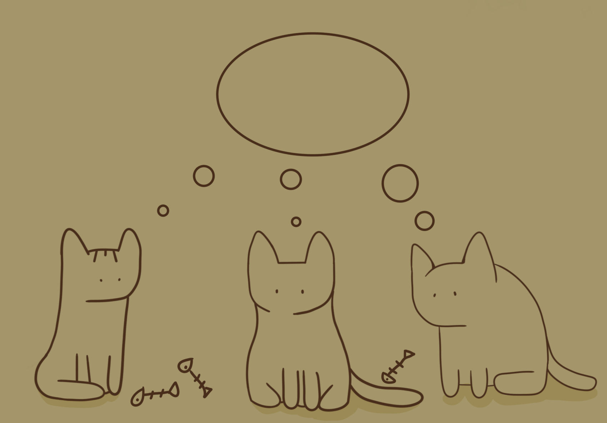
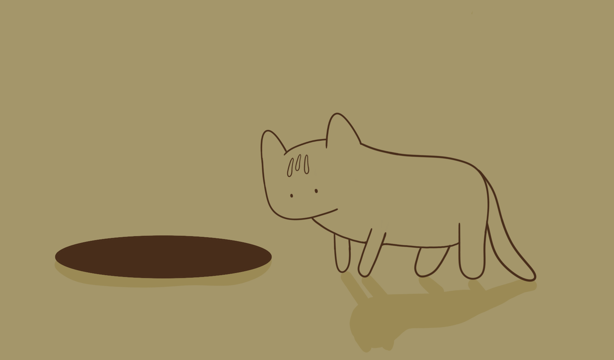
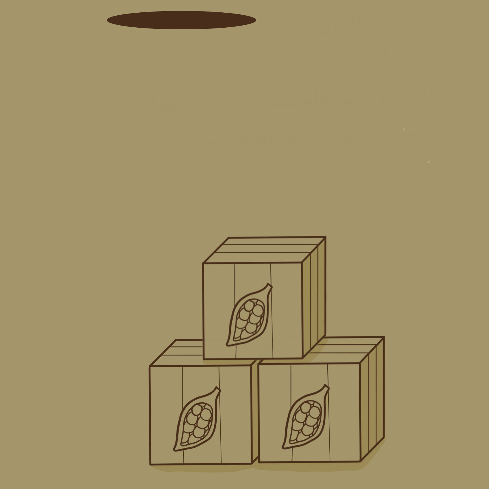
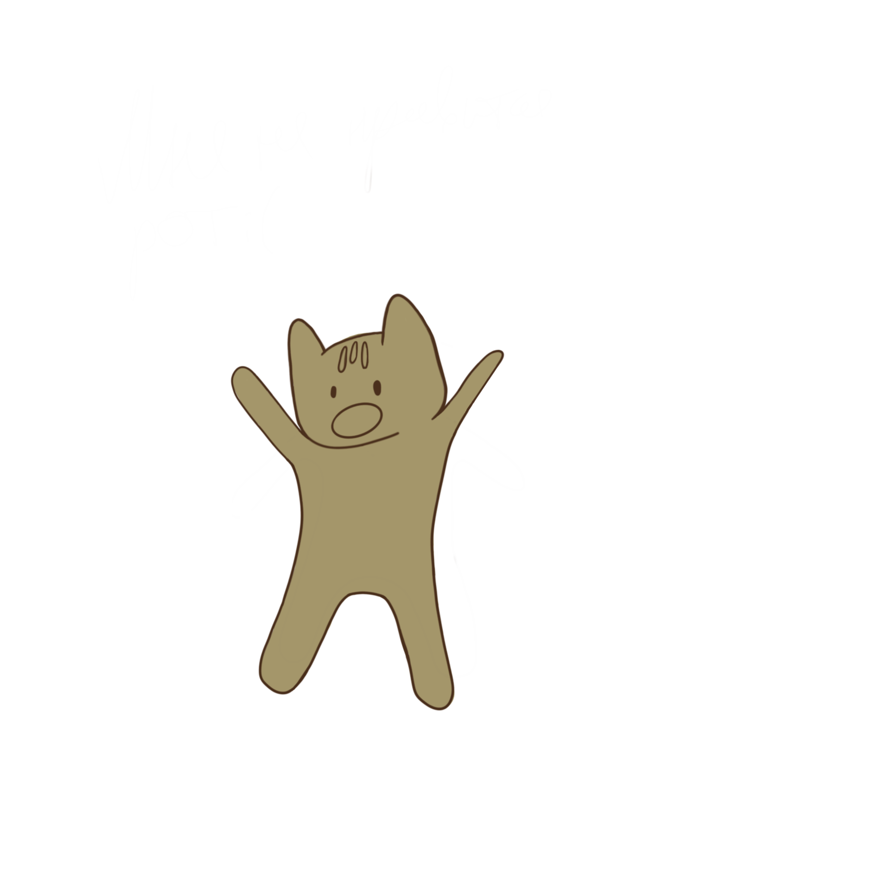
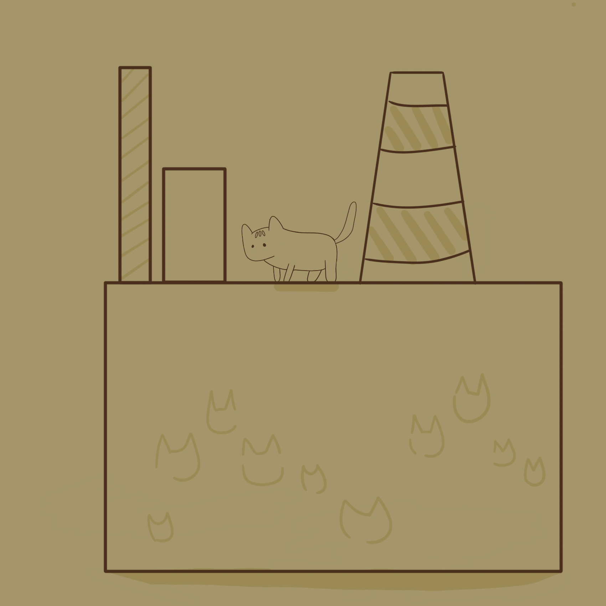

В далеком городе Грустнопушино жили грустные, голодные и безработные коты.
Серые дни тянулись длинными цепями, словно тучи, плывшие над их головами.
Отсутствие работы и постоянный голод тяжело ложились на маленькие пушистые плечи.

Васька, один из котов, бродил по окраинам города, пытаясь отыскать что-то, что может изменить их унылую реальность.
И вот, посреди этой серой безысходности, он обнаружил яму
Ароматный запах привлек его, и, заинтересованный, он потянулся к яме.
Кликните по яме

Оказавшись в яме с ароматными какао бобами,
Васька осознал, что перед ним что-то большее, чем просто случайное приключение.
Поддавшись вдохновению, он решил использовать свою находку в благотворительных целях. Васька пришел к мысли создать фабрику,
которая не только обеспечит котов работой, но и превратит их город в место, наполненное радостью и ароматом шоколада.


Спасенный из ямы, Васька собрал вокруг себя грустных котов и рассказал им о своем замысле.
Вместе они решили преобразить свой город, начиная с постройки шоколадной фабрики.
Каждый кот нашел свое призвание: одни собирали какао бобы, другие разрабатывали рецепты, третьи строили фабрику.

Голодные коты стали радостными работниками, у которых была не только работа, но и множество сладких угощений.
Шоколадная фабрика Васьки стала источником радости и процветания для всего города.
Грустные дни ушли в прошлое, а город стал известен как Сладкогорье, где царит аромат шоколада и счастья